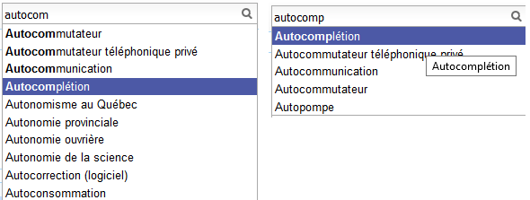

Formalisation¶
Problème d’optimisation¶
Je me réfère pour cela à l’article [Sevenster2013] (voir aussi [Bampoulidis2017]) qui introduit différentes façons de construire un système d’autocompétion et qui les compare à l’usage. Et s’il existe plusieurs façons de faire, il faut d’abord mettre au point une façon de les comparer. Je me place dans le cadre d’un moteur de recherche car c’est l’usage principal, que celui-ci soit un moteur de recherche ou une recherche incluse sur un site de vente. A la fin de la journée, on sait quelles sont les requêtes saisies par les utilisateurs et le nombre de fois qu’elles ont été saisies : pour .
Sans système de complétion, les utilisateurs saisissent donc où est la longueur de la complétion . Avec le système de complétion, les utilisateurs saisissent moins de caractères, c’est ce chiffre là qu’on cherche à minimiser. L’unité est le charactère saisi ou keystroke en anglais.
Même avec le même système de complétion, il n’est pas dit que tous les utilisateurs saisissent la même requête de la même façon. Pour simplifier, on va supposer que si malgré tout et ne considérer que la façon minimale de saisir une requête.
L’exemple précédent illustrent deux façons de saisir le terme autocomplétion (sur Wikipédia), autocom + 4 touches vers le bas ou autocomp + 1 touche vers le bas, soit 7+4=11 touches dans le premier cas ou 8+1=9 touches dans le second cas.
Définition D1 : Minimum Keystroke
On définit la façon optimale de saisir une requête sachant un système de complétion
 comme étant le minimum obtenu :
comme étant le minimum obtenu :
(1)¶
La quantité  représente le nombre de touche vers le bas qu’il faut taper pour
obtenir la chaîne
représente le nombre de touche vers le bas qu’il faut taper pour
obtenir la chaîne  avec le système de complétion et les
avec le système de complétion et les  premières lettres de .
premières lettres de .
De façon évidente, et et si . On prend également comme convention et . Certains systèmes proposent des requêtes avant de saisir quoique ce soit, c’est pourquoi on inclut la valeur qui représente ce cas. Construire un système de complétion revient à minimiser la quantité :
Ensemble des complétions¶
Il n’y a pas de restriction sur la fonction mais on se limitera
dans un premier temps à une fonction simple. On suppose que le système d’autocomplétion
dispose d’un ensemble de requêtes ordonnées et la fonction :
Où est le sous-ensemble ordonné de des complétions
qui commencent par les premières lettres de et de longueur supérieure strictement à .
![position(q, S(q[1..k]))](../_images/math/cd79e2e1fe4c8539ce79889601acf46fe293399f.svg) est la position de dans cet ensemble ordonné
ou si elle n’y est pas. Cette position est strictement positive
sauf si auquel cas, elle est nulle.
Cela signifie que l’utilisateur doit descendre d’au moins un cran
pour sélectionner une complétion.
On note la position de la complétion dans l’ensemble .
Par construction, .
est la position de dans cet ensemble ordonné
ou si elle n’y est pas. Cette position est strictement positive
sauf si auquel cas, elle est nulle.
Cela signifie que l’utilisateur doit descendre d’au moins un cran
pour sélectionner une complétion.
On note la position de la complétion dans l’ensemble .
Par construction, .
(2)¶
désigne le cardinal de l’ensemble.
Trouver le meilleur système de complétion revient à trouver la meilleure
fonction et dans le cas restreint l’ordre sur qui minimise
cette fonction. Le plus souvent, on se contente de trier les complétions par ordre
décroissant de popularité. On considérera par la suite qu’on est dans ce cas.
Gain¶
On définit le gain en keystroke comme étant le nombre de caractères saisis en moins :

Minimier ou maximiser revient au même.
Où l’ensemble des caractères tapés par les utilisateurs. est en quelque sorte le ratio de caractères économisés par le système de complétion.
Does Online Evaluation Correspond to Offline Evaluation in Query Auto Completion? (2017) Alexandros Bampoulidis, João PalottiMihai LupuJon BrasseyAllan Hanbury ECIR 2017: Advances in Information Retrieval
Algorithmic and user study of an autocompletion algorithm on a large medical vocabulary (2013), Merlijn Sevenster, Rob van Ommering, Yuechen Qian Journal of Biomedical Informatics 45, pages 107-119